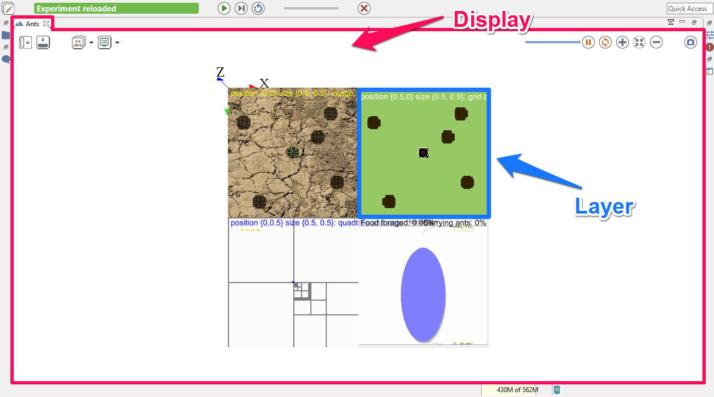
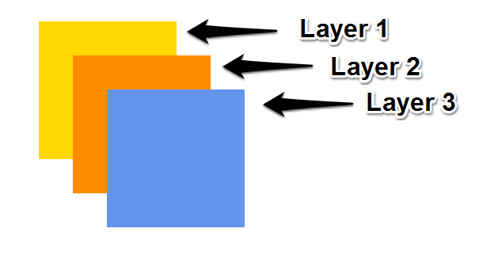
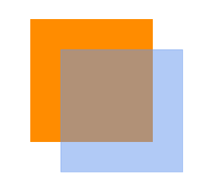

Defining displays (Generalities)
Index
Displays and layers
A display is the graphical output of your simulation. You can define several displays related with what you want to represent from your model execution. To define a display, use the keyword display inside the output scope, and specify a name (name facet).
experiment my_experiment type: gui {
output {
display "display1" {
}
display name:"display2" {
}
}
}
Other facets are available when defining your display:
- Use
backgroundto define a color for your backgrounddisplay "my_display" background:#red - Use
refreshif you want to refresh the display when a condition is true (to refresh your display every number of steps, use the operatorevery)display "my_display" refresh:every(10)
You can choose between two types of displays, by using the facet type:
- java2D displays will be used when you want to have 2D visualization. It is used for example when you manipulate charts. This is the default value for the facet type.
- opengl displays allows you to have 3D visualization.
You can save the display on the disk, as a png file, in the folder name_of_model/models/snapshots, by using the facet autosave. This facet takes one a boolean as argument (to allow or not to save each frame) or a point (to define the size of your image). By default, the resolution of the output image is 500x500px (note that when no unit is provided, the unit is #px (pixel) ).
display my_display autosave:true type:java2D {}
is equivalent to :
display my_display autosave:{500,500} type:java2D {}
Each display can be decomposed in one or several layers. Here is a screenshot (from the Toy Model Ant) to better understand those different notions we are about to tackle in this session.

Organize your layers
In one 2D display, you will have several types of layers, giving what you want to display in your model. You have a large number of layers available. You already know some of them, such as species, agents, grid, but other specific layers such as image (to display image) and graphics (to freely draw shapes/geometries/texts without having to define a species) are also available
Each layer will be displayed in the same order as you declare them. The last declared layer will be above the others.
Thus, the following code:
experiment expe type:gui {
output {
display my_display {
graphics "layer1" {
draw square(20) at:{10,10} color:#gold;
}
graphics "layer2" {
draw square(20) at:{15,15} color:#darkorange;
}
graphics "layer3" {
draw square(20) at:{20,20} color:#cornflowerblue;
}
}
}
}
Will have this output:

Most of the layers have the transparency facet in order to see the layers which are under.
experiment expe type:gui {
output {
display my_display {
graphics "layer1" {
draw square(20) at:{10,10} color:#darkorange;
}
graphics "layer2" transparency:0.5 {
draw square(20) at:{15,15} color:#cornflowerblue;
}
}
}
}

To specify a position and a size for your layer, you can use the position and the size facets.
The position facet is used with a point type, between {0,0} and {1,1}, which corresponds to the position of the upper left corner of your layer in percentage. Then, if you choose the point {0.5,0.5}, the upper left corner of your layer will be in the center of your display. By default, this value is {0,0}.
The size facet is used with a point type, between {0,0} and {1,1} also. It corresponds to the size occupied by the layer in percentage. By default, this value is {1,1}.
experiment expe type:gui {
output {
display my_display {
graphics "layer1" position:{0,0} size:{0.5,0.8} {
draw shape color:#darkorange;
}
graphics "layer2" position:{0.3,0.1} size:{0.6,0.2} {
draw shape color:#cornflowerblue;
}
graphics "layer3" position:{0.4,0.2} size:{0.3,0.8} {
draw shape color:#gold;
}
}
}
}
NB : displays can have background, while graphics can’t. If you want to put a background for your graphics, a solution can be to draw the shape of the world (which is, by default, a square 100m*100m).
A lot of other facets are available for the different layers. Please read the documentation of graphics for more information.
Example of layers
agents layer
agents allows the modeler to display only the agents that fulfill a given condition.
Please read the documentation about agents statement if you are interested.
species layer
species allows modeler to display all the agent of a given species in the current display. In particular, modeler can choose the aspect used to display them.
Please read the documentation about species statement if you are interested.
image layer
image allows modeler to display an image (e.g. as background of a simulation).
Please read the documentation about image statement if you are interested.
graphics layer
graphics allows the modeler to freely draw shapes/geometries/texts without having to define a species.
Please read the documentation about graphics statement if you are interested.
| //: # (endConcept | 2d_displays) |